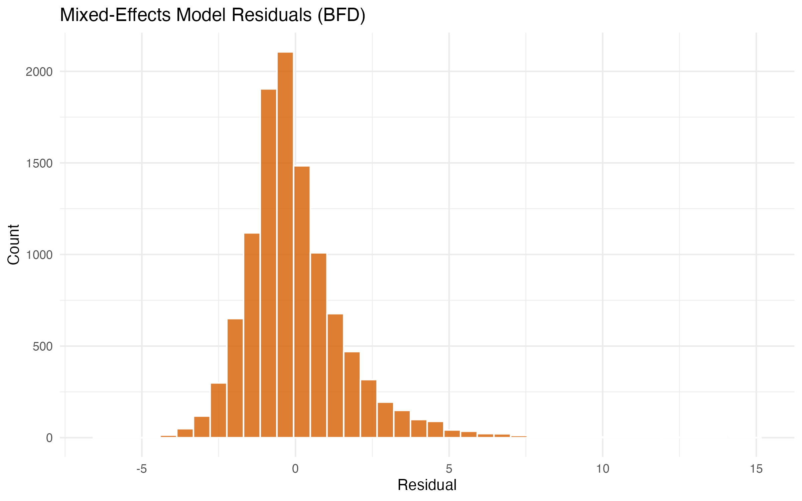
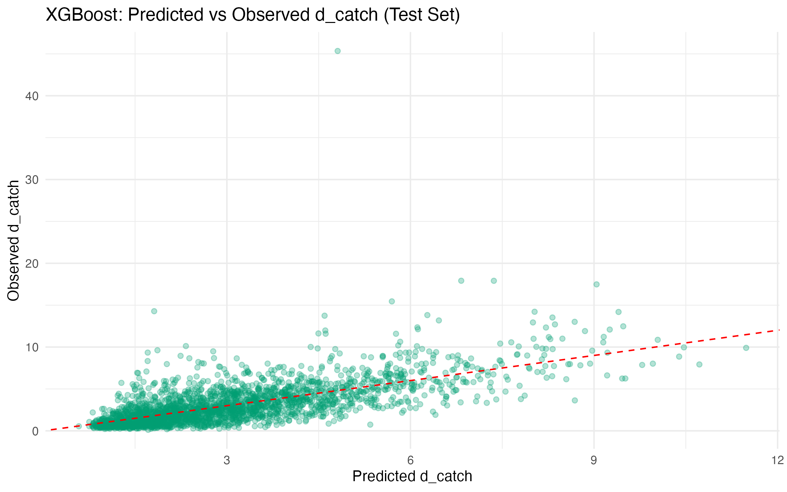
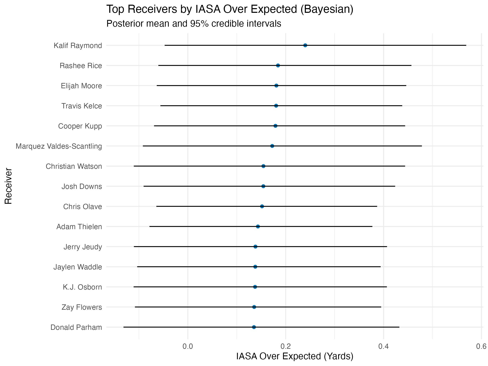
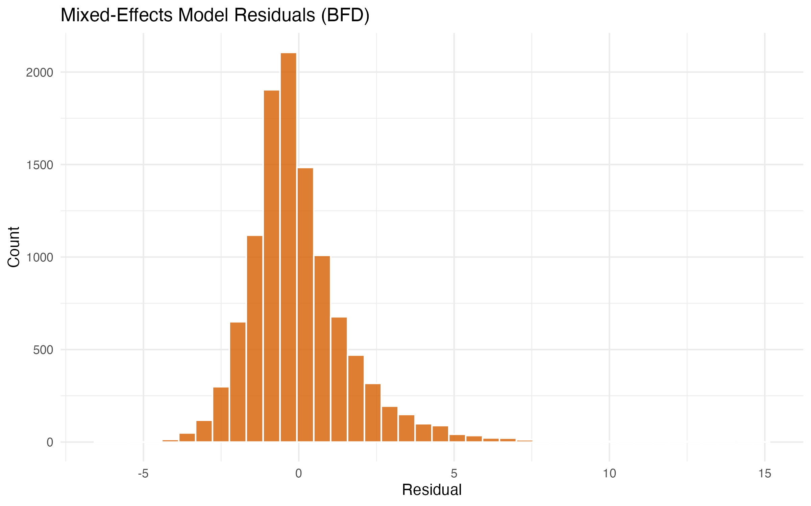
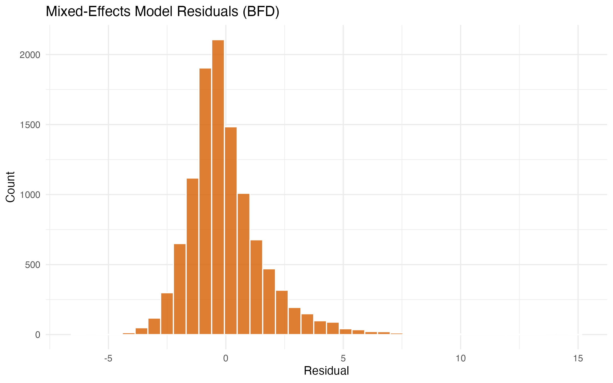

Technical Report: Quantifying In-Air Receiver Movement
Author
Eleanor Brothers, Kalynn Willis, Jasmine Peck
Published
November 27, 2025
Executive Summary
Overview
NFL tracking data tells us how open a receiver is at the throw and at the catch, but it rarely answers a crucial question: what happened while the ball was in the air? Defenders are reacting, the ball is traveling, and receivers are fighting for position, yet most public metrics only capture two snapshots in time. This project introduces In‑Air Separation Added (IASA), a play‑level measure of how much separation a targeted receiver gains or loses between the throw and the arrival of the ball, and combines it with a Markov Lift metric and a predictive model for final separation.
Using 2023 regular‑season tracking data from the Big Data Bowl (Weeks 1–18), we reconstruct the full separation trajectory for every targeted receiver. We define IASA as the change in receiver–defender distance during ball flight, categorize separation into four intuitive states (tight, moderate, open, wide open), and model transitions between these states as a Markov chain. On top of this, we fit a mixed‑effects model to separate receiver skill from play context and an XGBoost model that predicts separation at the catch from pre‑throw and situational features.
Approach
Our analysis proceeds in four steps:
Play‑level separation: For each targeted play, we identify the throw and catch (or arrival) frames, compute distance to the nearest defender each frame, and define IASA as the difference between separation at the catch and at the throw.
Separation dynamics: We discretize separation into four states and estimate a league‑wide transition matrix that describes how often receivers move between states frame‑to‑frame. We then compute Markov Lift for each receiver: how often they “break open” from tight/moderate to open/wide‑open relative to league average.
Context‑adjusted skill: We fit a linear mixed‑effects model for IASA that includes air time, initial separation, and contextual play features as fixed effects and receiver/game effects as random effects. The receiver‑level random effects define IASA over expected.
Predictive model: We train an XGBoost model to predict final separation using only pre‑throw information (including (d_{throw}), air time, and play context), and evaluate its performance on a held‑out test set.
Main Findings
League‑wide, receivers usually lose separation while the ball is in the air: the mean IASA is −0.82 yards, reflecting how defenders naturally close space on most throws, especially deeper passes with longer air time. Longer air time and larger initial separation are both associated with more negative IASA, consistent with regression to the mean and the extra time defenders have to recover. Despite this baseline, a subset of receivers consistently generate positive IASA over expected, adding separation even after accounting for route, coverage, and situational factors.
From the Markov‑chain perspective, separation states are “sticky” from frame to frame, but breaking open from tight or moderate coverage is still observable and varies across players. The league‑wide probability of moving from a covered state (tight/moderate) to an open state (open/wide‑open) is 1.49% per frame, while top receivers exceed this by several percentage points. Our predictive model attains an RMSE of 1.92 yards for final separation and confirms that initial separation and air time are the dominant predictive features, with context variables providing incremental but smaller gains.
Implications
For front offices and coaches, this work separates who created separation from who merely benefited from the call or coverage. IASA over expected attributes in‑air movement skill to receivers after adjusting for down‑and‑distance, route concepts, coverage family, and box count. Markov Lift reframes separation as a sequence of coverage states and highlights which receivers are most likely to break open late in the route, a key skill in third‑down and red‑zone situations. The predictive model offers a complementary lens, identifying situations that are inherently separation‑friendly even before the ball is thrown. Together, these tools provide a framework for scouting receivers, designing route concepts, and communicating data‑driven insights in football language rather than purely statistical terms.
1. Introduction
1.1 Motivation and Problem Statement
In the NFL, separation is usually summarized at a single moment: how open a receiver is at the throw or at the catch. These snapshots are informative but incomplete. A receiver who is initially covered can win late separation at the catch point, while another may be wide open at the throw but allow a defender back into the play as the ball arrives. Traditional metrics blur these stories together, making it difficult to distinguish route‑running craft from play design and coverage busts.
Big Data Bowl tracking data offers a unique opportunity to quantify what happens during the flight of the ball. At 10 Hz resolution, we observe every step a receiver and the nearest defender take between the throw and the arrival. Our goal is to convert this raw positional data into interpretable, receiver‑centric metrics that:
Quantify how much separation is typically gained or lost while the ball is in the air.
Isolate receiver skill from contextual factors such as route type, coverage family, and air time.
Identify which receivers are most likely to break open late in the route.
1.2 Football Examples
Consider two common scenarios:
A deep go route against press coverage where the receiver initially loses at the line but stacks the defender and creates late separation just as the ball arrives.
A shallow crosser scheme where route design generates a wide‑open window at the throw, but the defender closes quickly and contests the catch by the time the ball arrives.
Both plays may record similar separation at the catch, yet the underlying skills are very different. The first reflects in‑air separation creation, while the second reflects in‑air separation loss despite a favorable design. Our analysis focuses specifically on this in‑air phase.
1.3 Research Questions
We structure our analysis around four main questions:
Baseline Behavior: How much separation do NFL receivers typically gain or lose between the throw and the catch, and how does this distribution look across the league?
Drivers of In‑Air Separation: How do air time, initial separation, and contextual features (e.g., route and coverage families) influence IASA?
Receiver Skill and Markov Lift: After accounting for context, which receivers consistently add separation in the air? How often do they transition from tight/moderate coverage into open/wide‑open states relative to league baseline?
Predictability: To what extent can final separation be predicted using only pre‑throw information, and which features are most important?
2. Data Description
2.1 Data Sources
We utilize tracking and play‑level data from the Big Data Bowl 2026 release, covering the 2023 NFL regular season (Weeks 1–18). The key components are:
Tracking data: Frame‑level (x, y) positions for all players and the ball at 10 Hz.
Play metadata: Play descriptions, game context (down, distance, time, score), and offense/defense identifiers.
Targeted receiver information: Identifiers for the targeted receiver and event tags for the throw and the ball arrival (catch, pass breakup, or incompletion).
We conceptually split the tracking into:
Input segment: Frames from the snap up to the throw.
Output segment: Frames from the throw through the arrival of the ball or the end of the play.
Our focus in this report is on the output segment, where in‑air receiver–defender interactions occur.
2.2 Sample Construction
Starting from all passing plays in Weeks 1–18, we construct our analysis sample as follows:
Restrict to plays with a clearly identified targeted receiver, throw frame, and ball‑arrival frame.
Remove plays where tracking is incomplete during the ball’s flight (e.g., missing frames or ambiguous timing).
Compute, for each frame during ball flight, the distance between the targeted receiver and the nearest defender, and summarize this trajectory at the play level.
After these filters, our final dataset contains 14,108 passing plays. For each play, we store:
Separation at the throw ((d_{throw})).
Separation at the catch or arrival ((d_{catch})).
Air time (duration between throw and arrival).
The full sequence of separation states (tight, moderate, open, wide open) during ball flight.
Play‑level contextual variables used in our models (route/coverage families, box count, etc.).
3. Methodology
3.1 In‑Air Separation Added (IASA)
Our primary play‑level metric is In‑Air Separation Added (IASA), defined as:
\[
IASA = d_{catch} - d_{throw},
\]
where (d_{throw}) is the distance (in yards) between the targeted receiver and the nearest defender at the throw frame, and (d_{catch}) is the corresponding distance at the ball‑arrival frame. Positive IASA indicates that the receiver gained separation while the ball was in the air, whereas negative IASA indicates that the defender closed the gap.
Interpreting IASA:
A receiver with (IASA = +1.0) yard turned a marginally contested target ((d_{throw} = 2.5) yards) into a more open catch point ((d_{catch} = 3.5) yards).
A receiver with (IASA = -1.5) yards may have started open but allowed a defender to re‑enter the passing lane by the catch.
IASA is intentionally simple: it summarizes the net change in separation over the ball’s flight, while our other methods (Markov Lift and mixed‑effects modeling) provide more nuanced views.
Show code
# Compute In-Air Separation Added (IASA) from play-level features.# This mirrors the logic in src/02_compute_IASA.R.library(tidyverse)compute_iasa <-function(play_features) { play_features |>mutate(IASA = d_catch - d_throw,separation_change_pct =ifelse(d_throw >0, (d_catch - d_throw) / d_throw, NA_real_),is_separation_gained = IASA >0 )}# Example of applying this to all weekly feature files and saving analysis_full.rds# (In practice we run this via src/02_compute_IASA.R in the pipeline.)if (FALSE) { PROC_DIR <-"../processed" feature_files <-list.files(PROC_DIR, pattern ="play_features_w[0-9]+\\.rds", full.names =TRUE) features <- feature_files |> purrr::map(readRDS) |>list_rbind() analysis_df <-compute_iasa(features)saveRDS(analysis_df, file.path(PROC_DIR, "analysis_full.rds"))}
3.2 Separation States and Markov Lift
To study separation as a dynamic process, we discretize separation at each frame into four states:
S0 (Tight): < 1 yard
S1 (Moderate): 1–3 yards
S2 (Open): 3–5 yards
S3 (Wide Open): > 5 yards
For each targeted route, we observe a sequence of states ((S_t)_{t=1}^T) during ball flight. We model these transitions with a first‑order Markov chain, estimating the transition probabilities:
The league‑wide transition matrix captures how likely a receiver is to maintain or change separation from frame to frame. The diagonal elements reflect state persistence, while off‑diagonal elements represent gains or losses in separation.
We focus on transitions from covered states (S0, S1) to open states (S2, S3). Define:
Positive Markov Lift indicates that the receiver breaks open from coverage more often than an average NFL receiver, controlling for the fact that the event is rare on any single frame. This metric is naturally expressed in percentage points (e.g., “+6.2%”).
Raw IASA conflates receiver skill with context: longer air‑time throws, high‑leverage downs, and certain route/coverage combinations are naturally harder environments in which to gain separation. To isolate receiver skill, we fit a linear mixed‑effects model:
(u_{}) is a receiver‑level random effect capturing in‑air separation skill not explained by context.
(u_{}) is a game‑level random effect capturing shared conditions within a game (e.g., weather, opponent tendencies).
() is residual error.
We estimate the model using standard mixed‑effects software and summarize receiver skill via IASA over expected, defined as the estimated receiver random effect (u_{}). Intuitively, a receiver with (u_{} = +0.4) tends to finish plays with roughly 0.4 yards more in‑air separation than expected, conditional on their route mix and situations; a receiver with (u_{} = -0.3) tends to lose additional separation relative to expectation.
To quantify uncertainty in these receiver effects, we also fit a Bayesian analogue of the mixed‑effects model using weakly informative priors on the fixed effects and on the receiver/game random‑effect standard deviations. This yields a posterior distribution for each receiver’s IASA over expected, from which we report posterior means and 95% credible intervals; players with few targets naturally have wider intervals, reflecting greater uncertainty in their estimated in‑air separation skill.
Model diagnostics (fitted vs. observed IASA and residual distributions) are used to assess linearity, variance assumptions, and the contribution of random effects.
# Bayesian analogue of the mixed-effects IASA model using brms.library(brms)fit_bayesian_iasa_model <-function(data) {brm( IASA ~ air_time + d_throw + pass_length + defenders_in_the_box + team_coverage_man_zone + route_of_targeted_receiver + (1| targeted_id) + (1| game_id),data = data,family =gaussian(),prior =c(prior(normal(0, 2), class ="Intercept"),prior(normal(0, 1), class ="b"),prior(exponential(1), class ="sd"),prior(exponential(1), class ="sigma") ),iter =2000,warmup =1000,chains =4,cores =4,control =list(adapt_delta =0.95) )}if (FALSE) { PROC_DIR <-"../processed" df <-readRDS(file.path(PROC_DIR, "analysis_full.rds")) df_model <- df |>drop_na(IASA, air_time, d_throw, targeted_id, pass_length, defenders_in_the_box) |>filter(air_time >=0) |>mutate(targeted_id =as.factor(targeted_id),game_id =as.factor(game_id) ) bayes_model <-fit_bayesian_iasa_model(df_model)saveRDS(bayes_model, file.path(PROC_DIR, "mixed_effects_model_bayes.rds"))}
3.4 Predictive Modeling of Final Separation (XGBoost)
While the mixed‑effects model attributes skill to receivers, we also ask a complementary question: given what we know at the throw, how much separation should we expect at the catch? To answer this, we fit a gradient‑boosted tree model (XGBoost) to predict (d_{catch}) using only pre‑throw or contemporaneous features, including:
Initial separation (d_{throw}).
Air time.
Play context (down, distance, field position).
Aggregated route/coverage indicators and defensive structure variables.
We train the model on a subset of plays and hold out a test set to evaluate performance. Our primary metric is Root Mean Squared Error (RMSE) in yards, supplemented by visual inspection of predicted vs. observed separation and a feature importance analysis.
Unlike the mixed‑effects model, which is built around interpretability and receiver random effects, XGBoost is optimized for predictive accuracy and can capture non‑linear interactions between features (e.g., how air time interacts with initial separation differently on certain route types).
All intermediate data products and model outputs flow through a scripted R pipeline. For reproducibility, the main steps are:
Show code
# 1) Feature engineering and separation trajectories for each weeksource("src/01_engineer_features.R")# 2) Compute IASA and join supplementary play-level contextsource("src/02_compute_IASA.R")# 3) Fit mixed-effects model and write receiver rankings + metricssource("src/03_models.R")# 4) Compute Markov transition matrix and Markov Lift rankingssource("src/06_markov_separation.R")# 5) Train XGBoost model and export feature importance + validation metricssource("src/07_ml_models.R")
The scripts in src/ write processed .rds and .csv files to processed/, which are in turn read by this Quarto document to generate tables and figures.
4. Results
4.1 Separation Dynamics (IASA)
Across the 14,108 passing plays in our sample, receivers typically lose separation during ball flight. The mean IASA is −0.82 yards, and the distribution is centered below zero with a long left tail:
Many plays cluster near 0, where defenders and receivers maintain roughly constant separation.
A substantial mass of plays shows moderate separation loss, consistent with defenders closing space on deeper throws.
A smaller but important right tail captures plays where receivers gain meaningful separation in the air.
Distribution of IASA
From a football perspective, this baseline matters: if most plays lose separation, then simply maintaining or slightly improving separation is evidence of skill. It also highlights why raw “separation at catch” can be misleading without context—some receivers routinely fight back to neutral or positive IASA from difficult starting points.
4.2 Drivers of Separation Change
The mixed‑effects model quantifies how air time, initial separation, and context relate to IASA. Two core drivers emerge:
Air Time: Longer throws result in more lost separation. The estimated coefficient of approximately (_1 = -0.09) (yards per second of air time, (p < 0.01)) implies that adding about half a second to a throw’s flight time costs, on average, an additional () yards of separation. This matches the intuition that deeper balls give defenders more time to recover.
Initial Separation: There is strong regression to the mean, with an estimated coefficient of (_2 ) ((p < 0.001)). Routes that are very open at the throw tend to see some closure by the catch, while tightly contested throws occasionally drift toward more neutral separation.
Model diagnostics show that fitted vs. observed IASA align reasonably well and residuals are roughly centered and symmetric:

These patterns suggest that the combination of air time, initial separation, and contextual covariates captures a meaningful portion of the variation in in‑air separation, while leaving room for receiver‑specific effects and unmeasured factors (e.g., quarterback ball placement, subtle contact downfield).
4.3 Markov Chain Analysis
We next examine separation as a frame‑level process. The estimated league‑wide transition matrix reveals that states are sticky: most frames remain in the same separation state on the next frame, especially in S2 (open) and S3 (wide open). However, non‑trivial movement occurs:
Markov Transition Matrix
From this matrix, the league‑average probability of breaking open—transitioning from covered (S0/S1) to open (S2/S3) in a single frame—is 1.49%. Because frames occur at 0.1‑second resolution, this may seem small, but across a typical 0.7–1.0 second ball flight there are multiple opportunities for change.
To identify receivers who are particularly adept at breaking open mid‑route, we compute Markov Lift as the difference between a receiver’s personal break‑open probability and the league baseline. Players with large positive Markov Lift values repeatedly convert tight/moderate coverage into open windows more often than expected, even after aggregating across many games. In addition to the empirical estimates, we fit a Bayesian hierarchical model for these break‑open rates, which partially pools low‑volume receivers toward the league average and provides posterior means and 95% credible intervals for each player’s propensity to break open.
Receivers at the top of these tables often show Markov Lift values of several percentage points—for example, a player who breaks open 6.2% more often than league average on a per‑frame basis. The Bayesian table shows that many of these elevated break‑open rates remain above league average even after accounting for uncertainty, with wider intervals for low‑volume receivers and tighter intervals for high‑volume, consistently open separators.
Bayesian Markov Lift Intervals
Figure: Posterior mean break‑open probabilities and 95% credible intervals for the top break‑open receivers, highlighting which players are clearly above league baseline versus those whose apparent lift comes with wider uncertainty.
4.4 Predictive Modeling (XGBoost)
Our XGBoost model predicts final separation (d_{catch}) using pre‑throw information. On the held‑out test set, the model attains an RMSE of 1.92 yards, meaning that predictions are typically within about two yards of the observed separation. While this is not precise enough to predict the exact contest level on every single play, it is sufficient to:
Distinguish genuinely wide‑open looks from tightly contested targets.
Identify situations (route and coverage combinations, air‑time regimes) that tend to generate open throws.
XGBoost Feature Importance
Feature importance confirms that initial separation (d_{throw}) is the dominant predictor, followed by air time. Contextual variables (e.g., route/coverage features) contribute additional explanatory power but with smaller marginal importance. The predicted vs. observed plot shows points clustered along the identity line with moderate scatter:

XGBoost Predicted vs Observed
This behavior is consistent with a noisy, high‑variance outcome where much of the remaining uncertainty reflects factors not fully captured in our features, such as precise ball placement, hand‑fighting downfield, and micro‑adjustments at the catch point.
4.5 Top Receivers (IASA Over Expected)
Finally, we leverage the mixed‑effects model to produce receiver‑level rankings based on IASA over expected. For each receiver with sufficient volume, we extract their estimated random effect (u_{}), which measures how much in‑air separation they add or lose relative to a context‑matched baseline.
Receivers with large positive IASA‑over‑expected values consistently beat the model: even after accounting for air time, initial separation, and context, they end up more open at the catch than expected. The Bayesian rankings show that many of these positive effects are statistically well‑separated from zero, while players with few targets or borderline effects have much wider credible intervals, reflecting “boom‑bust” versus steady separator profiles. Conversely, receivers with negative values may rely more heavily on scheme or timing, tending to lose separation in the air relative to comparable situations. Comparing these rankings with Markov Lift highlights players who both gain net separation and frequently break open mid‑route.

Bayesian IASA Over Expected Intervals
Figure: Posterior mean IASA over expected and 95% credible intervals for the top receivers, distinguishing reliable separators with tight intervals from higher‑variance “boom‑bust” profiles.
5. Discussion
Our multi‑method analysis paints a coherent picture of in‑air receiver movement in the NFL:
Baseline dynamics: Most plays lose separation while the ball is in the air (average IASA −0.82 yards), especially on deeper, longer‑air‑time throws. This sets a challenging baseline: doing “better than zero” requires meaningful skill.
Skill vs. context: Mixed‑effects modeling shows that initial separation and air time explain a significant portion of IASA, but non‑trivial receiver‑level random effects remain, capturing genuine differences in in‑air separation skill.
Breaking open: Markov‑chain analysis reframes separation as a sequence of coverage states and reveals that elite receivers break open from tight/moderate coverage more often than league average. A player with, for example, +6.2 percentage points of Markov Lift is repeatedly creating windows the quarterback would not otherwise have, and the Bayesian version of this model shows which of these elevated rates remain clearly above league average once uncertainty is taken into account.
Predictability and design: The XGBoost model demonstrates that much of final separation is predictable from pre‑throw information, underscoring the role of play design and defensive structure. However, residual variation and receiver‑level effects indicate that individual skill still matters even in favorable or unfavorable contexts.
Taken together, these results suggest that separation should be viewed as a dynamic, shared product of scheme, quarterback decision‑making, and receiver movement skill. IASA and Markov Lift help attribute credit within that shared process, while the Bayesian models add an explicit notion of risk–reward by distinguishing receivers with stable, tightly estimated advantages from those whose value comes with much wider uncertainty.
6. Limitations
Several limitations are important when interpreting our findings:
Single‑season sample: Our analysis uses one regular season (2023). Receiver skill and team schemes evolve over time, so multi‑year stability of IASA and Markov Lift remains an open question.
Tracking noise and event timing: Imperfect alignment of throw and catch frames, as well as small positional errors in tracking, introduce noise into both IASA and the frame‑level state sequences.
Context coverage: While we include route and coverage families and basic game context, we do not fully capture quarterback progression, protection quality, or detailed defensive techniques (e.g., bracket coverage, leverage calls).
Modeling assumptions: The linear mixed‑effects model assumes linear relationships and Gaussian random effects, and the Markov chain assumes first‑order dependence. Real routes may have longer memory and more complex, non‑linear patterns.
Attribution: Positive IASA and Markov Lift are attributed to receivers, but in practice they also reflect quarterback play, play‑calling, and opponent quality.
These limitations do not invalidate our results but should temper over‑interpretation of individual rankings or model outputs.
7. Future Work
There are several promising directions to extend this work:
Route Types: Incorporate more granular route labels (e.g., go vs. curl vs. dig) as fixed effects or interaction terms to understand which route structures most reward in‑air separation skill.
Ball Location: Account explicitly for ball placement (underthrows, back‑shoulder throws, high/low targets), which can both enable and constrain how receivers create separation at the catch point.
Defensive Positioning: Enrich the feature set with defender orientation, speed, and leverage, allowing us to distinguish separation created by receiver movement from separation granted by defensive decisions.
Multi‑season Stability: Track IASA and Markov Lift over multiple seasons to assess stability and year‑to‑year persistence, which is critical for scouting and contract decisions.
Integration with Outcome Metrics: Link in‑air separation metrics more directly to catch probability, yards after catch, and EPA to quantify how much in‑air separation actually translates into on‑field value.
By deepening the link between tracking data and on‑field decision‑making, these extensions could make IASA and Markov Lift even more actionable for teams and analysts.


 
